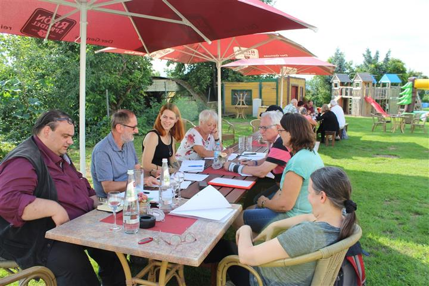
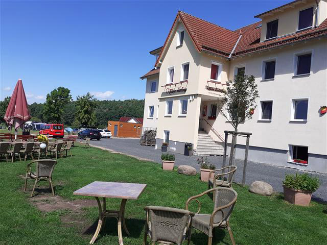
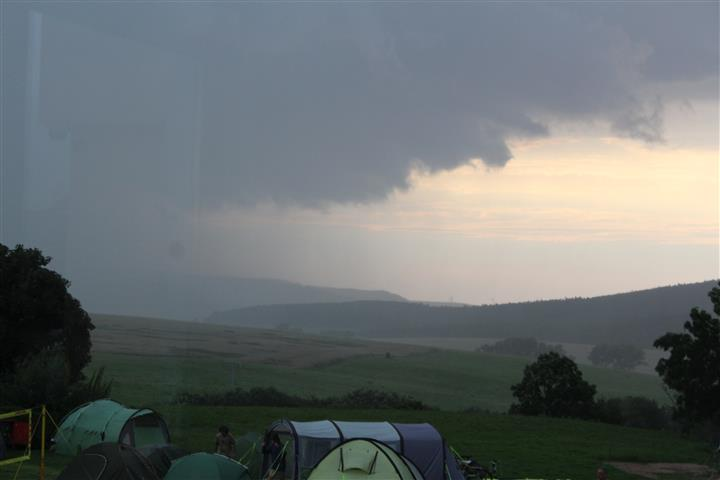

Nach corona-bedingter mehrfacher Verlegung und der digitalen Durchführung der 31. Literaturwerkstatt im November 2020 wagte der Südthüringer Literaturverein im August 2021 einen Neuanfang in Präsenz am neuen Ort. Das vorherige Werkstatt-Domizil Schloss Sinnershausen hatte die Pandemie-Ausfälle nicht verkraftet und seinen Betrieb eingestellt. Im Familienhotel Rhön-Feeling in Bernshausen fanden die Autorinnen und Autoren der Region einen sehr schönen neuen Austragungsort und wurden vom Team bestens betreut. So kamen insgesamt 25 Mitstreiter zusammen und näherten sich literarisch dem Thema „Im Nebel" an – passend zur noch immer eingeschränkten Veranstaltungssituation. Eine literarische Matinee rundete das Literaturwochenende ab. Unter der bewährten Leitung von André Schinkel arbeitete die Prosagruppe mit Bildern von Frank Hauptvogel, zu denen beeindruckende Texte entstanden. Für die Lyrik-Gruppe sprang Michael Carl ein (ursprünglich Daniela Danz vorgesehen). Die Jugendgruppe wurde geleitet von Natalie Ewald. Die Rhön spielte mit ihren Naturwundern herein.





